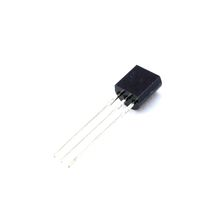

Полупроводники
Транзистор S9013
S9013 — это маломощный NPN биполярный транзистор общего назначения. Его обычно используют как ключ или усилитель в низковольтных схемах.

Документация
Характеристики
Тип транзистора
NPN, биполярный, кремниевый
Корпус
TO-92
Максимальное напряжение коллектор-эмиттер
20 В
Максимальное напряжение коллектор-база
40 В
Максимальное напряжение эмиттер-база
5 В
Максимальный ток коллектора
500 мА
Рассеиваемая мощность
625 мВт
Температура перехода
до 150 °C
Температура хранения
-55…+150 °C
Коэффициент усиления по току hFE
64–202 (в зависимости от группы)
Подробнее
Транзистор S9013 относится к семейству NPN эпитаксиальных кремниевых транзисторов в корпусе TO-92. По даташиту он рассчитан на коммутацию и усиление слабых сигналов, а также подходит для AF-driver каскадов и маломощных выходных ступеней. Для этой серии характерны умеренный ток коллектора и сравнительно небольшое падение в насыщении, поэтому деталь часто ставят в простые аналоговые и импульсные узлы. В справочных таблицах для S9013 обычно встречаются разные варианты от разных производителей, поэтому при замене важно сверять именно конкретный даташит и распиновку.
hw-2026-018